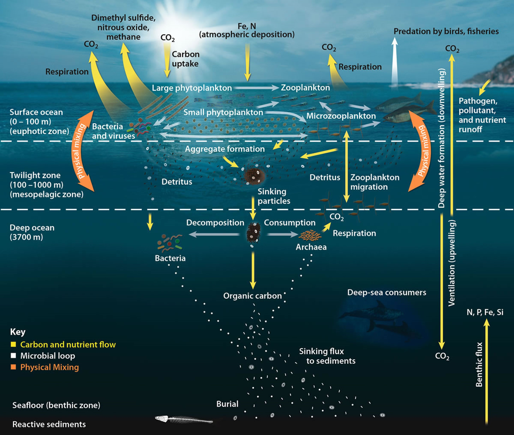

What is the ocean's "Carbon Pump"?
The carbon cycle between the atmosphere, oceans, and land on Earth plays an extremely important role in controlling the concentration of greenhouse gases like CO₂ and methane in the atmosphere, thereby regulating the Earth's climate. Much of this process is comprised of the oceans and their ecosystems.
In the surface layer of the ocean (depth 0-100 m), phytoplankton perform photosynthesis and absorb CO₂ from the atmosphere. Zooplankton, such as krill, eat these phytoplankton and then release CO₂ back into the atmosphere through respiration. In this surface layer, physical mixing by wind and waves occurs, supplying the ocean with atmospheric oxygen and CO₂, and diffusing nutrients, trace metals, and plankton. In this way, the mixed layer of the ocean surface maintains the balance of the ecosystem.
US Department of Energy Office of Science
In the twilight zone (100-1000 m), where sunlight barely reaches, dead organisms and waste sink as detritus. This detritus is broken down by bacteria and microorganisms, releasing organic carbon and nutrients. Zooplankton move up and down in this zone, transporting nutrients and carbon over a wide area. In the deeper deep sea (1000 m and below), sinking detritus is decomposed and eaten by deep-sea creatures. Through this decomposition and consumption process, organic carbon is buried in the seabed, removing CO₂ from the atmosphere for long periods. Through these processes, the ocean's carbon pump adjusts the concentration of CO₂ in the atmosphere.
Among the entire ocean, the Southern Ocean is particularly important for absorbing 40% of human-induced CO₂ and 75% of the heat from global warming, making it the most crucial region for considering the Earth's climate. This carbon pump in the Southern Ocean is supported by its rich ecosystem.
Antarctic krill: the cornerstone of the global carbon cycle
Antarctic krill are a fundamental component of the ocean's carbon pump. These small, shrimp-like creatures are abundant in the Southern Ocean and are a primary food source for various marine animals such as whales, seals, and penguins. Krill eat phytoplankton, and when krill and other organisms die or excrete waste, the accumulated carbon sinks to the ocean floor.
Amazingly, the biomass of Antarctic krill is approximately 380 million tons, making them the only species comparable to humans (7.9 billion people / 400 million tons) in terms of mass, and the only species more prosperous than humans on Earth.
Australian Antarctic Division